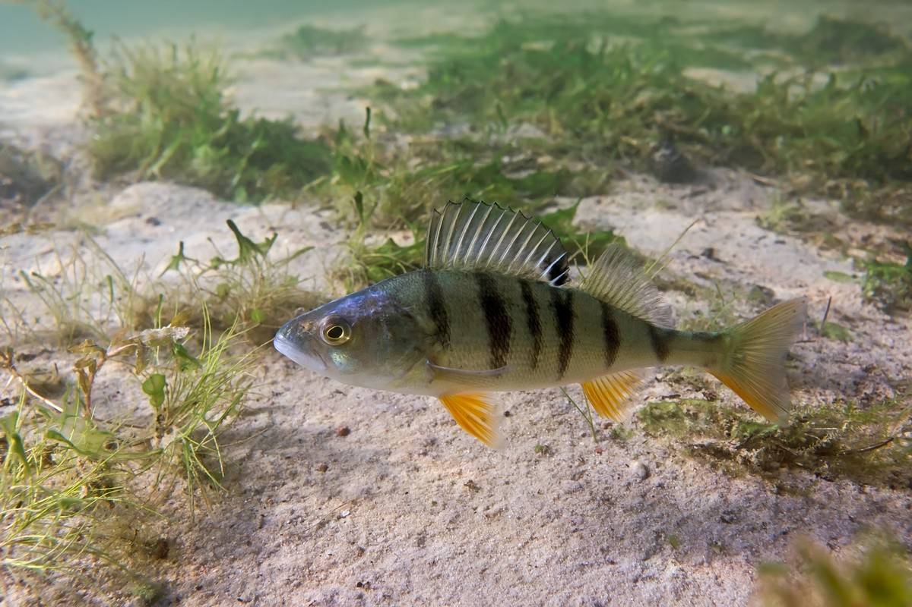

Muistipeli suomen kaloista
Tervetuloa pelaamaan muistipeliä suomen kaloista
Tässä pelissä etsit pareja joistakin suomen kalalajeista.
Maksimi pistemäärä on 10 pistettä ja yrityksiä on 10.
Peli loppui!
Sait 0/10 pistettä!
Yrityksiä jäi jäljelle:
Pisteet:
Yrityksiä jäljellä: